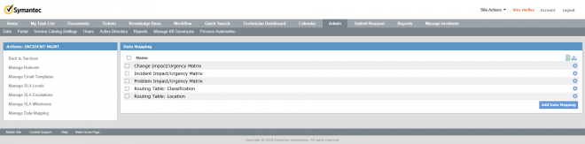
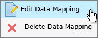
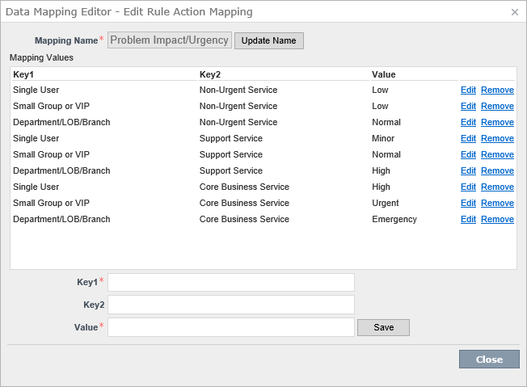

Table Of Contents
Admin | Process Automation | [Choose Service] | Service Dashboard
Manage Data Mapping

Some Data Mapping is already configured in the base install, you can amend to your own requirements and add your own.
| Name |
|---|
| Change Impact/Urgency Matrix |
| Incident Impact/Urgency Matrix |
| Problem Impact/Urgency Matrix |
| Routing Table: Classification |
| Routing Table: Location |
You can add/amend these via the Action

Then Edit/Remove and Add Mapping Values.
You can also update the Mapping Name.

This can be any two Keys and a Value.
| Key1 | Key2 | Value |
|---|---|---|
| Single User | Non-Urgent Service | Low |
| Small Group or VIP | Non-Urgent Service | Low |
| ... |
Videos
ServiceDesk Configuration: Data Mapping and Routing Rules
https://www.symantec.com/connect/videos/servicedesk-configuration-data-mapping-and-routing-rules
This video will cover how to setup data mapping in ServiceDesk and utilize those mapping tables as part of Routing Rule sets.
If you prefer a written Article to a video see the transcription below:
If we check "INCIDENT-MGMT"
For the Data Mapping there will be 3 Tables.
- Impact/Urgency Matrix
- Routing Table: Classification
- Routing Table: Location
Start with the Impact/Urgency Matrix and click on the
Lightning bolt then
Edit Data Mapping.
There are two Keys 1 is for Urgency and 2 is for Impact then a value. There are default ones set up from install.
Key1 Urgency Key2 Impact Example
Key1 Key2 Value Non-Urgent Service Single User Low Support Service Small Group or VIP Normal Core Business Service Department/LOB/Branch Emergency You can amend these to how your Company works.
This will then be available to you in the Incident
The next one is Classification which is empty by default.
Key1 is the Category.
Hardware.Mobile
These are split by a “.”
It covers all sublevels if you don’t specify one.
So “Hardware.Mobile.iPhone” and “Hardware.Mobile.Andriod” would be covered by “Hardware.Mobile”.
The Value is the name of the Queue, choose one then Save and Close this.
Key1 Hardware.Mobile Value Mobile Queue We can now use this in a Ruleset.
Back on the left hand side click Manage Rulesets.
We want to expand the Ruleset: OnIncidentReceived
Click on the
Add Rule.
Now click Add Group -> Add Condition, From the dropdown choose “Classification” and “Is Set” then click on +.
Now in the Actions section we want to add an action of “Route Incoming Incident” -> “Using Category Routing Table” -> “Routing Table: Classification” +.
Finally click Save.